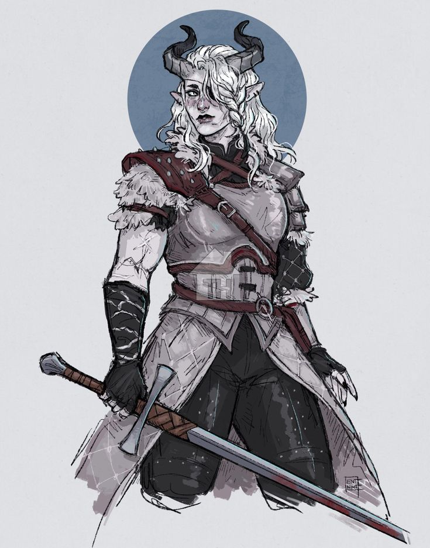
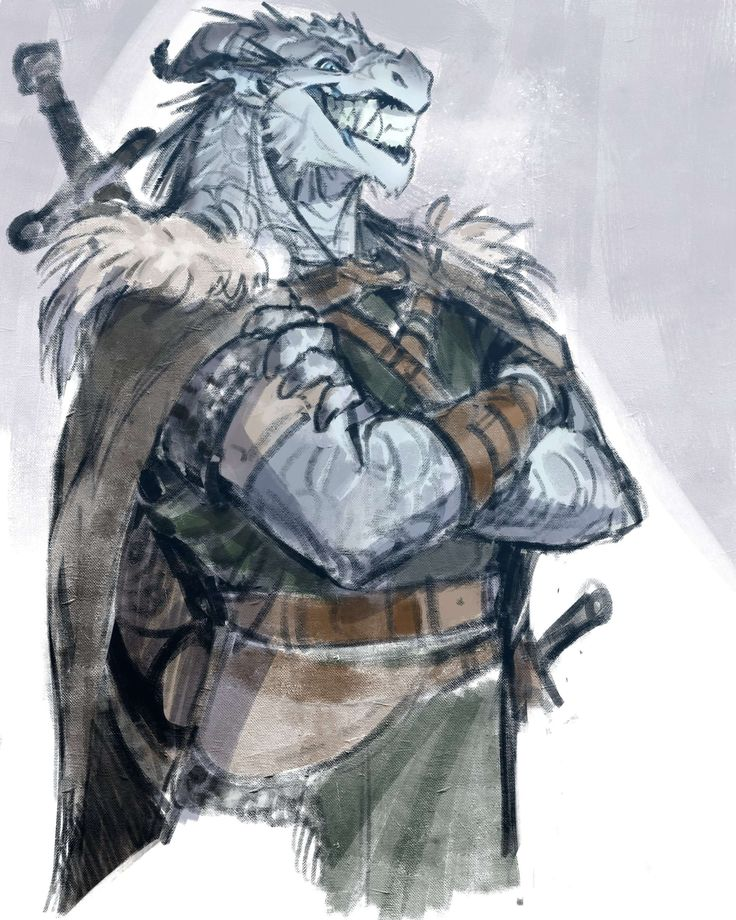
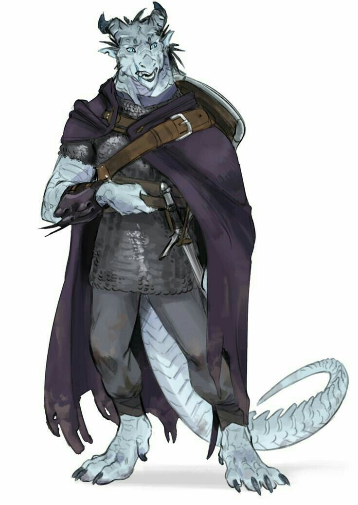

A Família Gvardiya governa a cidade-estado de Smotritel, sede das fortalezas reais do Reino de Leskie. Foram os ancestrais desta casa que ousaram defender a deusa Leskie das acusações de heresia — mesmo sem sucesso — e é essa lembrança que hoje move Lisandra a dedicar sua vida à segurança do reino, como se cada muro erguido em Smotritel fosse uma desculpa tardia que o passado nunca aceitou.
✦ A DUQUESA DE SMOTRITEL

✦ família gvardiya
Lisandra Gvardiya
Sua família foi uma das que defendeu Leskie das acusações de heresia e de estar ligada a forças malignas — mesmo não tendo adiantado. Ajudou Ramiel a cuidar de Anno, e Lisandra foi uma amiga muito próxima dela. Atualmente trabalha com a segurança e as regulamentações do reino, relatando e auxiliando diretamente a rainha Anno.
✦ OS FILHOS ADOTIVOS

✦ família gvardiya
Amael Gvardiya
Filho mais velho adotivo, foi uma criança bem aventureira pelos lagos congelados. Mantém uma rivalidade tanto pessoal quanto acadêmica com Fanio Guizos Thadias — e, além disso, carrega uma paixão quase vibrante por armas brancas.

✦ família gvardiya
Brutos Gvardiya
Filho mais novo adotivo, tenta seguir os passos do irmão mais velho. Mesmo acompanhando os conselhos gentis de sua mãe, sente que não consegue achar seu lugar ali — acaba passando mais tempo com Kaleb Guizos Thadias e Flora Guizos pelos pastos, desenhando paisagens.